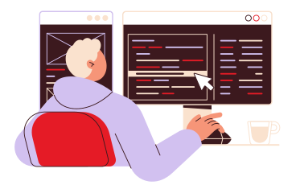

About Me
I’m an IT graduate and aspiring cloud & software developer, currently completing an AWS re/Start internship at Forge Academy × Nokia in Roodepoort. My background spans Java/Spring Boot backend development, WordPress web support, data analysis with Excel, and hands-on IT support — and I’m passionate about building practical, scalable solutions that make a real impact. I enjoy building practical solutions, learning continuously, and working in spaces where collaboration and growth are encouraged. I’m passionate about creating meaningful digital experiences and developing myself further in the tech industry. I’m currently focused on opportunities where I can contribute, grow, and make a real impact through technology.
Passionate about problem-solving and innovation, I enjoy contributing to projects that make a real impact. Let’s connect and explore how we can create solutions together! 🚀

Skills I bring to your projects
Switch between categories, then click a specific skill to see experience, tools, and a real project example.
Tap a skill row to see years of experience, tools I use, and where I've applied it.
Projects & Internships
Hover over each card to flip it and see what I actually did – tools, responsibilities, and outcomes.
Completing cloud computing training at Clearwater Office Park, Roodepoort, aligned with AWS certification pathways.
- Training on AWS services: EC2, S3, IAM, VPC, and CloudWatch.
- Preparing for AWS certification with focus on cloud architecture, security, and deployment.
- Gaining practical experience through real-world cloud labs and scenarios.
- Applying Linux and networking fundamentals in cloud environments.
I contributed to backend features for training and internal projects, focusing on clean, testable code.
- Developed backend services and API integrations using Java and Spring Boot.
- Designed SQL queries for reporting and data analysis.
- Assisted with system testing, deployments, and environment configuration.
- Created technical documentation for features and system support processes.
A role-based web application for clinic appointments and patient management using the MVC pattern.
- Designed the database schema in MySQL and implemented CRUD operations.
- Built responsive UI with Bootstrap and custom CSS.
- Used JavaScript to handle validation and improve user interactions.
Worked with a small team to design a tech-driven solution to improve resource management.
- Helped define the problem statement and user requirements.
- Prototyped interface ideas and data flows for the solution.
- Pitched the concept to judges with a clear, structured presentation.
Supported IT operations and web/data tasks at Constantia Square Office Park, Midrand.
- Analysed and cleaned application data using Microsoft Excel for internal reporting.
- Updated and maintained a WordPress-based website (content, plugins, themes).
- Repaired laptops and resolved hardware/software issues for staff.
- Configured email accounts, Wi-Fi connections, and printers.
- Supported daily admin tasks using Microsoft Word and Excel.